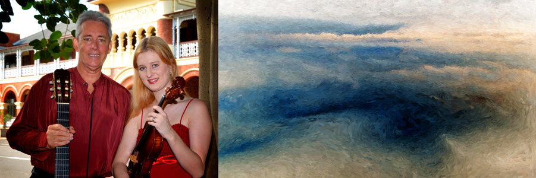

SUNDAY VARIETY CONCERT |
|

Harbourside Duo Presents |

|

Following the phenomenal success of their 2014 season, the superb foursome return with their first concert for 2015, bringing their signature style of classical and modern music to the masses in their own fresh and entertaining style. Featuring |
|
2pm Sunday 14 June at C2 (CivicTheatre building) |


|
|
Townsville Concert Band |


2pm Sunday 6 September at C2 (Townsville Civic Theatre)
|
|
The superb foursome return with their final concert for 2015, bringing their signature style of classical and modern music to the masses in their own fresh and entertaining style. Featuring |
|
2pm Sunday 29 November at C2 (Townsville Civic Theatre) |